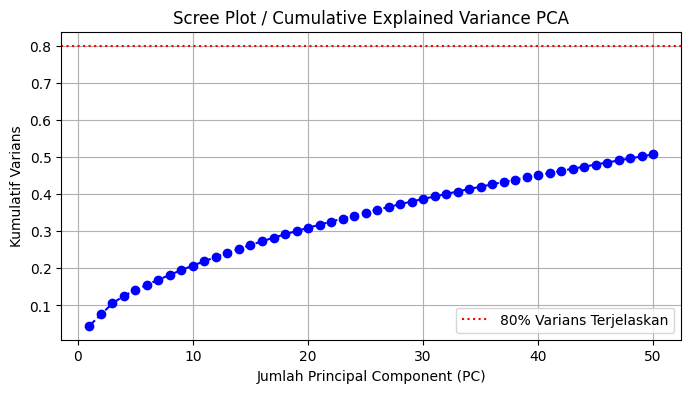
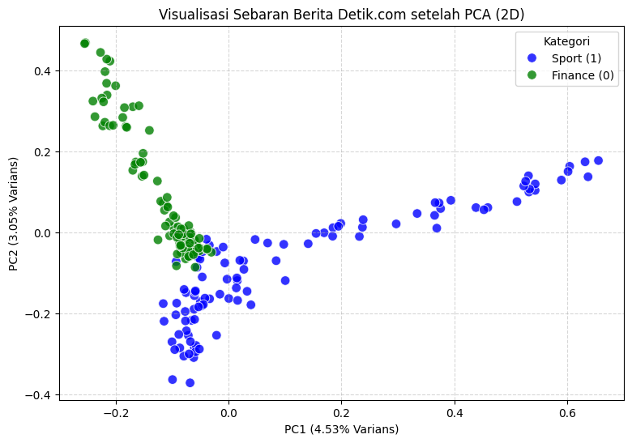

Pemisahan Fitur (\(X\)) dan Label (\(y\))#
Memisahkan kolom matriks TF-IDF (sebagai variabel prediktor \(X\)) dari kolom id dan label (sebagai variabel target \(y\)).
import pandas as pd
# Load data matriks TF-IDF jika belum ada di memory
if 'df_tfidf' not in locals():
df_tfidf = pd.read_csv('detik_tfidf_matrix.csv')
# 1. Pisahkan Fitur (X) dan Target (y)
X = df_tfidf.drop(columns=['id', 'label'])
y = df_tfidf['label']
print("=== PEMISAHAN FITUR DAN LABEL ===")
print(f"• Dimensi Fitur (X) : {X.shape} ({X.shape[0]} artikel, {X.shape[1]} kata unik)")
print(f"• Jumlah Label (y) : {y.shape[0]} data (1 = Sport, 0 = Finance)")
=== PEMISAHAN FITUR DAN LABEL ===
• Dimensi Fitur (X) : (200, 5305) (200 artikel, 5305 kata unik)
• Jumlah Label (y) : 200 data (1 = Sport, 0 = Finance)
Analisis Explained Variance Ratio (Menentukan Jumlah Komponen)#
Melihat berapa banyak informasi (varians) dari ribuan kata unik yang berhasil dipertahankan saat dikompresi menjadi sejumlah komponen PCA.
import matplotlib.pyplot as plt
import numpy as np
from sklearn.decomposition import PCA
# 1. Fit PCA dengan seluruh/banyak komponen awal
pca_full = PCA(n_components=50)
pca_full.fit(X)
# 2. Hitung kumulatif varians
cumulative_variance = np.cumsum(pca_full.explained_variance_ratio_)
# 3. Visualisasi Grafik Cumulative Explained Variance
plt.figure(figsize=(8, 4))
plt.plot(range(1, 51), cumulative_variance, marker='o', linestyle='--', color='b')
plt.axhline(y=0.80, color='r', linestyle=':', label='80% Varians Terjelaskan')
plt.title('Scree Plot / Cumulative Explained Variance PCA')
plt.xlabel('Jumlah Principal Component (PC)')
plt.ylabel('Kumulatif Varians')
plt.legend()
plt.grid(True)
plt.show()
print(f"• Varians terjelaskan oleh 2 PC pertama: {cumulative_variance[1]*100:.2f}%")

• Varians terjelaskan oleh 2 PC pertama: 7.59%
Aplikasi PCA (Reduksi menjadi 2 Komponen Utama)#
Mengompresi ribuan kolom kata unik menjadi 2 Utama (PC1 & PC2) agar dapat dipetakan secara visual dalam koordinat 2D.
# 1. Inisialisasi PCA dengan 2 komponen
pca_2d = PCA(n_components=2, random_state=42)
# 2. Fit & Transform pada data TF-IDF
X_pca = pca_2d.fit_transform(X)
print("=== HASIL REDUKSI DIMENSI PCA (2D) ===")
print(f"• Dimensi Awal : {X.shape}")
print(f"• Dimensi Akhir : {X_pca.shape}")
print(f"• Rasio Varians PC1 : {pca_2d.explained_variance_ratio_[0]*100:.2f}%")
print(f"• Rasio Varians PC2 : {pca_2d.explained_variance_ratio_[1]*100:.2f}%")
print(f"• Total Varians : {sum(pca_2d.explained_variance_ratio_)*100:.2f}%")
=== HASIL REDUKSI DIMENSI PCA (2D) ===
• Dimensi Awal : (200, 5305)
• Dimensi Akhir : (200, 2)
• Rasio Varians PC1 : 4.53%
• Rasio Varians PC2 : 3.05%
• Total Varians : 7.59%
Visualisasi Scatter Plot 2D (Sport vs. Finance)#
Menggambar sebaran data hasil PCA dalam ruang 2D untuk melihat pemisahan kelompok (clustering/separation) antara kategori Sport (1) dan Finance (0).
import seaborn as sns
# 1. Buat DataFrame sementara untuk plotting
df_plot = pd.DataFrame(X_pca, columns=['PC1', 'PC2'])
df_plot['label'] = y.map({1: 'Sport (1)', 0: 'Finance (0)'})
# 2. Visualisasi Scatter Plot
plt.figure(figsize=(9, 6))
sns.scatterplot(
x='PC1', y='PC2',
hue='label',
data=df_plot,
palette={'Sport (1)': 'blue', 'Finance (0)': 'green'},
alpha=0.8, s=70
)
plt.title('Visualisasi Sebaran Berita Detik.com setelah PCA (2D)', fontsize=12)
plt.xlabel(f'PC1 ({pca_2d.explained_variance_ratio_[0]*100:.2f}% Varians)')
plt.ylabel(f'PC2 ({pca_2d.explained_variance_ratio_[1]*100:.2f}% Varians)')
plt.grid(True, linestyle='--', alpha=0.5)
plt.legend(title='Kategori')
plt.show()

Pembentukan DataFrame & Ekspor Hasil PCA ke CSV#
Menyimpan hasil reduksi dimensi PCA ke dalam file CSV sebagai dataset akhir yang siap digunakan untuk pemodelan Machine Learning (seperti Klasifikasi Naive Bayes, SVM, atau K-NN).
# 1. Buat DataFrame PCA
df_pca_result = pd.DataFrame(X_pca, columns=['PC1', 'PC2'])
# 2. Sisipkan kembali kolom id dan label di awal
df_pca_result.insert(0, 'label', y)
df_pca_result.insert(0, 'id', df_tfidf['id'])
print("=== TABEL HASIL REDUKSI DIMENSI PCA ===")
display(df_pca_result.head())
# 3. Simpan ke file CSV
df_pca_result.to_csv('detik_pca_results.csv', index=False, encoding='utf-8-sig')
print("\n✅ Tahap Reduksi Dimensi dengan PCA Selesai!")
print("💾 File tersimpan sebagai 'detik_pca_results.csv'")
=== TABEL HASIL REDUKSI DIMENSI PCA ===
| id | label | PC1 | PC2 | |
|---|---|---|---|---|
| 0 | 1 | 1 | -0.053775 | -0.061881 |
| 1 | 2 | 1 | -0.075348 | -0.148671 |
| 2 | 3 | 1 | -0.050022 | -0.170956 |
| 3 | 4 | 1 | -0.065749 | -0.217011 |
| 4 | 5 | 1 | 0.459458 | 0.061259 |
✅ Tahap Reduksi Dimensi dengan PCA Selesai!
💾 File tersimpan sebagai 'detik_pca_results.csv'